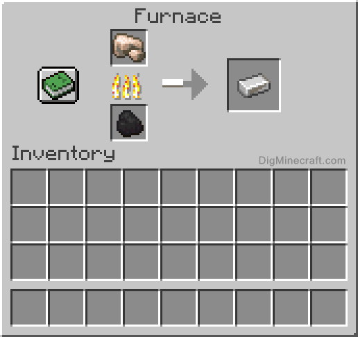

Cutting down a tree
The first thing to do in a normal Minecraft playthrough is to punch a tree, literally. This is the start to all advancements to be made after. The wood that is obtained at the start is very much required to progress at all, although it is not essential to cut down as much as you can in the beginning.

Crafting a Wooden Pickaxe
After punching a few trees and collecting the logs you can start to make something out of it. Opening your inventory with the E key will bring up your character inventory GUI. There are many things located here such as your storage, what you hold in your off-hand, armor equipped but most importantly the 2x2 crafting grid. Put your logs in the grid and craft some planks with them. After that you should put a plank in each of the grid spaces to make a crafting table. Place the crafting table down and craft some sticks by putting two planks in a straight vertical line and then combine the sticks and the planks to make your first Pickaxe!
Mining Stone
To mine stone, a pickaxe of any sort is required. Seeing as stone is vital to progressing in Minecraft, you will obviously want to aquire some, with your newly crafted Wooden Pickaxe!

Crafting a Stone Pickaxe
The tool recipes for wooden tools and stone tools are the same and will be used to upgrade to a new tier of tools, granting you the achivement "Stone Age".
Mining Iron
With this new tier of tools you can now start to obtain Iron Ore! As you might have guessed the recipes for Iron tools are the same as the Stone and the Wooden tools. But there is a new set of recipes to be made! Before that, you will need to gather something to eat. Im sure you are hungry from punching and mining so much!


Processing the Iron Ore
I sure hope you got some extra Stone when you were mining before because you are going to need atleast 8! Going back to the crafting table and putting cobblestone in a circle pattern leaving the middle grid space empty, you can craft a furnace. Of course a furnace requires some fuel to run and you can use anything made out of wood or coal that has been mined or gotten through burning logs with planks in the furnace. Each plank block will let you burn 1 item and each coal piece will let you burn 8 items! Put your Raw Iron Ore in the furncae and add some fuel, wait a few seconds and you have "Aquired New Hardware"!
Crafting an Iron Bucket
The Iron Bucket is one of the most important items you can have in Minecraft. It is used to carry liquids like lava or water but most important is the Water Bucket. The Water Bucket can and will save you in lots of different ways. The most common ones are extinguishing yourself when on fire and negating fall damage from a high fall or planned jump.
Gathering Food
When it comes to gathering food in Minecraft it is something that is essential to survive. Especially if you are not playing on Easy Difficulty or Peaceful Difficulty where you cant starve to death. There are many different means of gathering food but there are 2 different ways and that is to farm crops or kill animals that drop food.
Crafting Armor
Here are the new set of recipes with the Iron! To craft a full set of armor you need to have exaclty 24 of the corresponding material. There are a few different armors you can craft but it is not recommended to go for anything weaker than Iron Armor. That means that making Leather armor or Gold Amror is something that should only be done in specific cases.
Building a House
You might be surprised that i have not mentioned building a house yet. But gathering as many resources as possible on the first day is essential to survive the first night. It is a bigger benefit to have a full set of Iron Armor and tools than to have a house to hide in for the night. Mobs that spawn in the night can drop some very valuable materials such as Gunpowder or Ender Pearls.
Explore the World!
Now you have done everything you really need to do when starting a new world. Now with all your gear and knowledge you can go out by yourself and explore the world while playing however you like!
This website is made, updated and driven by a sole developer and was made as a school project. The website mainly covers everything about the Java Edition of Minecraft but Bedrock Edition specifics will be added aswell. Education edition, Minecraft Legends and Minecraft Dungeons will not be covered .This website will not have live upkeep but will be updated eventually. Copyright 2023 MC Knowledge by Neo Babic.